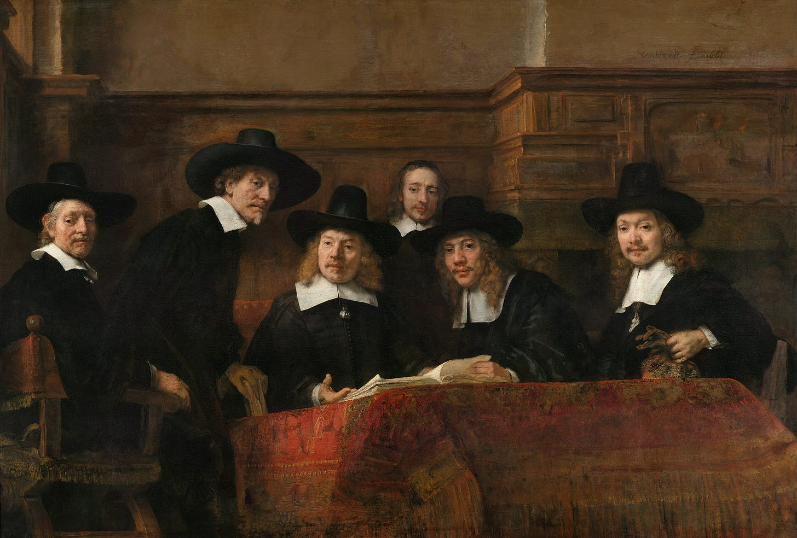

100x Multipliers & the Return of Guilds
How Elite Talent Captures Disproportionate Returns in the AI Economy, While Everyone Else Returns to Guilds
There is a lot of uncertainty around the future of the labour market as AI progresses in capabilities - more IQ, larger context window, better integrations across a company’s stack and the economy, new infrastructure to enable wider and easier deployment of automations (liabilities, insurance, verifiers, etc.) - which raises the question among many - how a future human-labour market would look like?
While I don’t plan to speculate in this essay about the longer horizon of full-automation (I’m working on a larger essay Post-”Labour”/”AGI” economics) - I do want to talk about the more immediate 3-10 years.

A lot of people online expect AI tools to elevate everyone. However, from personal experience working with and talking to many people who are using AI today, I have come to a completely different conclusion.
A person needs to hit a threshold of specific personality traits, like agency, intelligence, agility, and context-switching, just to have net-positive returns from using AI!
Then, if you are past this threshold, the difference between 2x, 3x, 5x returns and 100x returns from using these tools is an insanely different bar. AI multiplies talent exponentially.
In far too many cases, mid-talent might have net-NEGATIVE returns for an organization, as they cost you attention, time, and energy from your other top talent, all WHILE not providing value fast enough. The tasks they are able to work on are easily done by others with AI as an afterthought, and having them do those tasks actually just slows the company down, all while they burn shitloads of tokens and increase the org’s costs.
In the old economy, companies needed large layers of average workers because work had to be decomposed, coordinated, reviewed, and executed by humans. In the AI economy, more of that middle layer gets absorbed by a small number of high-agency operators using tools. So the value of “just doing the task” collapses, while the value of judgment, taste, agency, distribution, trust, and ownership rises.
These dynamics, in my opinion, will result in two extremes in the future economy:
1) Top 0.1% talent in any field will become extremely valuable.
We are already seeing this play out in the Silicon Valley talent war, with millions, and even tens of millions of dollars, in compensation packages for engineers.
That signals one of two things: (1) we are in a crazy bubble that is about to pop, or (2) the top 0.1% of a specific field might provide 99% of the value created, and “overpaying” for this talent compared to the average labour market rate for those roles is worth it.
While I believe the first is plausible, I am convinced we are in the latter scenario.
And while the top 0.1% of any field and in any company providing 99% of the value created, then the question arises - do you need the rest? especially if they are not even neutral-returns, but negative ones?
Probably not. Which bring us to the other extreme of the economy:
2) As AI concentrates economic production among top talent / high-agency operators, I think we’ll see others respond defensively by forming medieval guild-like structures to preserve income, social dignity, local relevance, and bargaining power.
The first is work that depends on a physical area: things tied to physical space, homes, neighborhoods, land, maintenance, lawn mowing, local services, and so on. These are businesses where proximity still matters, where being part of the local community still matters, and where trust is not easily replaced by software.
The second is work that is deeply community driven - businesses and services that flourish through word of mouth, local reputation, shared identity, or one trusted member of the community. In a world where digital production becomes increasingly automated and abundant, local trust becomes a kind of economic moat.
The third is human-experience work: IRL events, art, street art, theater, workshops, classes, performances, shared meals, physical spaces, and things that feel “humans by humans.” Anything connected to the physical world, anything that is not purely digital and can be human-improved, will become more valuable.
People will seek more local experiences with people they know, and with communities they feel part of. They will want things that are not just optimized, generated, and infinitely scalable. They will want things that feel human, situated, embodied, and socially real.
—
If this thesis is even directionally right, the personal implications are uncomfortable.
Therefore, my generic take is that you should work as hard as you can to build assets. Own businesses, property, distribution, audience, relationships, land, invest in Google, or anything else that can compound outside of wages. Wages, as we know them today, are not the way to enrich yourself in these turbulent times, and they may not be a reliable source of stability in the future.
It may also become harder to get a job than to invent one. We are already seeing college students say it feels easier to build and sell your own product than to find an entry-level job. I think this becomes more common. So start building your own stuff, sharpen your agency. Or - find a way to provide value to people in your community more directly directly, can be on smaller scales. In the long run, this may become a much better way to make ends meet.
The uncomfortable part is that I don’t think there will be a clean place for everyone in the old middle of the labour market. Some people will become hyperscalers, using AI to produce at insane leverage. Others will move toward guilds, local economies, physical work, trusted communities, human experiences, and things that still require humans in the loop.
The positive take here, is that I don’t think this means humans have no value. I think it means human value will shift away from just “doing the task,” and toward ownership, agency, taste, trust, relationships, physical presence, and building things that other humans actually want to be part of.
Adam